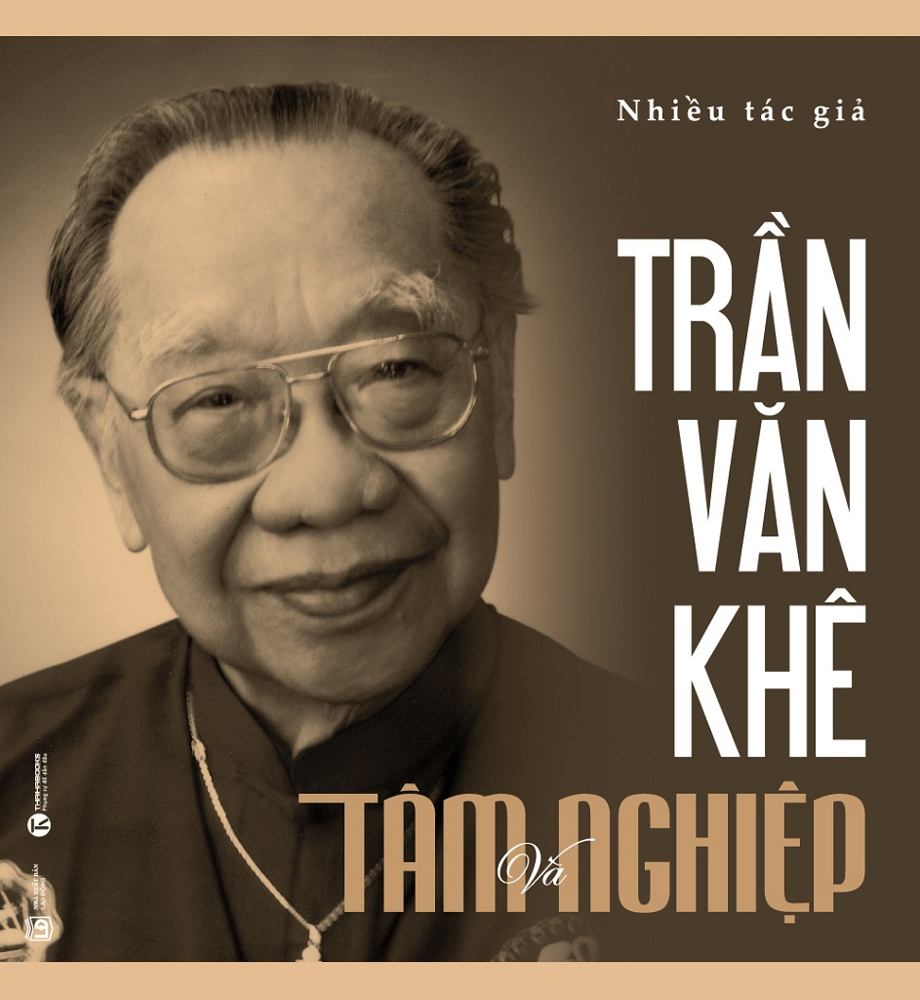

« Back
Trần Văn Khuê Tâm Và Nghiệp
By Nhiều Tác Giả

LỜI GIỚI THIỆU
LỜI MỞ ĐẦU
CUỘC ĐỜI CHA QUA HỒI ỨC CỦA CON TRAI
DU NGOẠN TRONG KHU VƯỜN ÂM NHẠC VỚI GIÁO SƯ, TIẾN SỸ TRẦN VĂN KHÊ
“VỀ VỚI QUÊ HƯƠNG ĐỂ ĐƯỢC THẤY MÌNH LUÔN TRẺ”
“TÔI KHÔNG CÓ GIA SẢN MÀ CHỈ CÓ MỘT SỰ NGHIỆP TINH THẦN”
TRẦN VĂN KHÊ TRONG KÝ ỨC BẠN BÈ VÀ HỌC TRÒ
NGÔI NHÀ CỦA “NHẠC VIỆT CHI BẢO”
NGHE THẦY KHÊ NÓI CHUYỆN ÂM NHẠC
SINH NHẬT MỘT NGƯỜI TRẺ… LẠ LÙNG!
TINH THẦN DÂN TỘC CHẢY TRONG HUYẾT QUẢN
NGƯỜI ĐẾN TỪ NHỮNG MẠCH NGUỒN DI SẢN
GIÁO SƯ TRẦN VĂN KHÊ: RA ĐI LÀ ĐỂ TRỞ VỀ
VỚI NHÀ DÂN TỘC NHẠC HỌC TRẦN VĂN KHÊ: “NĂM MƯƠI NĂM ẤY BIẾT BAO NHIÊU TÌNH”
NIỀM TIẾC THƯƠNG VÔ HẠN
20 NĂM MỘT GIỌNG NÓI ẤM NỒNG
NGƯỜI TRỌN ĐỜI VÌ ÂM NHẠC TRUYỀN THỐNG VIỆT
KÍNH NỂ BỘ NHỚ SIÊU ĐẲNG GIÁO SƯ TRẦN VĂN KHÊ
GIÁO SƯ TRẦN VĂN KHÊ: THƯ VIỆN BAO DUNG
NHÀ TRẦN VĂN KHÊ Ở SÀI GÒN
VĨNH BIỆT THẦY TRẦN VĂN KHÊ - NGƯỜI TRUYỀN LỬA
“ĐÃI CÁT TÌM VÀNG”
GIÁO SƯ, TIẾN SỸ TRẦN VĂN KHÊ VÀ NHỮNG TƯ LIỆU QUÝ
HỒN NGHỆ SỸ HÒA VÀO HỒN DÂN TỘC
NHÀ NHẠC HỌC TRẦN VĂN KHÊ
GIÁO SƯ TRẦN VĂN KHÊ VÀ TÌNH YÊU KHÔNG CÓ TUỔI
THẦY TRẦN VĂN KHÊ: QUYỀN NĂNG NGHỆ THUẬT
THẦY KHÊ
TRẦN VĂN KHÊ - THIÊN TÀI NHÂN ÁI
GIÁO SƯ TRẦN VĂN KHÊ VÀ KỶ NIỆM VỚI GIA TỘC NGUYỄN VĂN VĨNH
THUNG DUNG CÁNH HẠC NHẬP THIÊN THAI
QUẢ TRỨNG ĐÀ ĐIỂU VÀ BÚT TÍCH CỦA GIÁO SƯ TRẦN VĂN KHÊ
THẦY ƠI!
“NGÀY TRỞ VỀ CỦA GIÁO SƯ TRẦN VĂN KHÊ: TÌNH THƯƠNG ĐỂ LẠI
TƯỞNG NHỚ GIÁO SƯ TRẦN VĂN KHÊ
MỘT CỘI AN CHO LÁ RỤNG VỀ
ƯỚC MƠ CỦA MỘT NGƯỜI DÀNH CHO NHIỀU NGƯỜI
NHỚ CHÚ KHÊ
THƠ XƯỚNG HỌA TRẦN VĂN KHÊ VÀ TÔN NỮ HỶ KHƯƠNG
LỜI CHIA TAY VỚI MỘT NGƯỜI HIỀN
GIÁO SƯ TRẦN VĂN KHÊ QUA GÓC MÁY NHIẾP ẢNH GIA NGUYỄN Á
Chú Thích